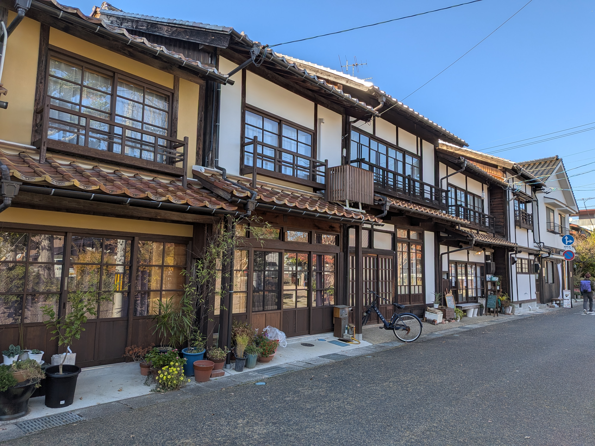
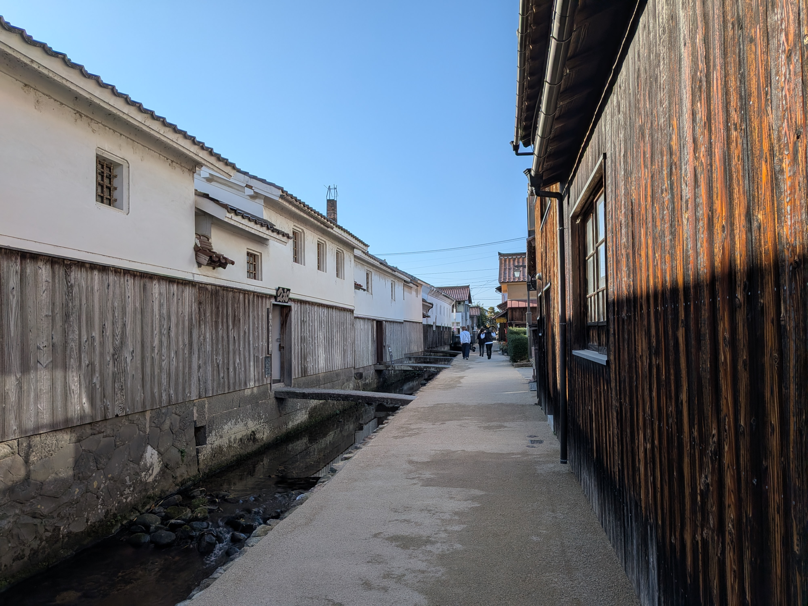
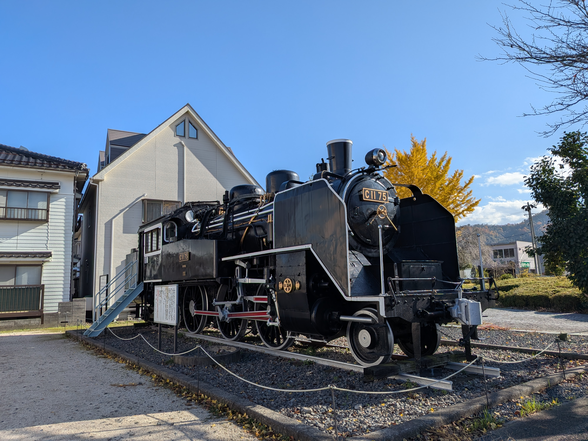

SIDE-A : STORY
ペダルを回せば、風景が映画になる。
昭和の面影と、白壁の情景が重なる街、倉吉。
古き良き路地、打吹山、そして旧国鉄倉吉線の廃線跡——。
そこには今も、日常とは違う“物語の空気”が漂っています。
「倉吉レトロベロ」は、速さを競わない
シネマティック・ライド。
ペダルを漕ぐたび、忘れていた時間がそっとほどけ、
目の前の景色は、まるで映画のワンシーンのように揺らぎます。
さあ、時を超える旅へ。
“あの日”のあなたが、どこかで待っているかもしれません。



